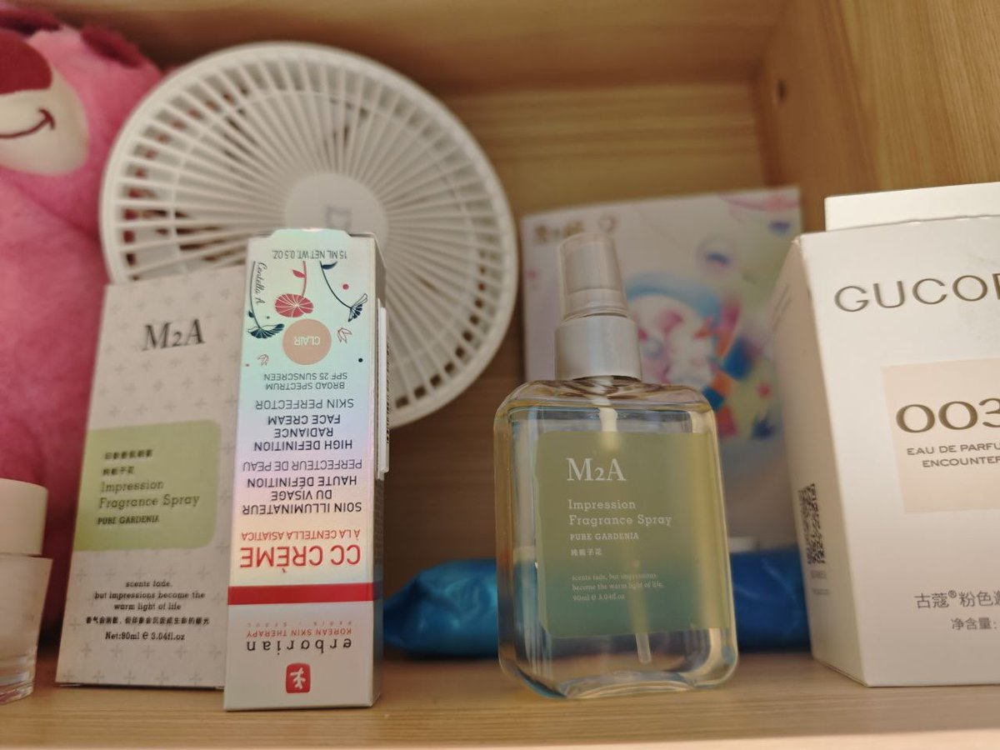

@520maodou 我之前头发还要再长一点的时候风把自己的头发上的洗发水味道吹到自己鼻子边的时候就觉得很像之前顺女走过身边能闻到的那个味道，所以大概率是洗发水味，长发能加大散发面积所以更浓（？



（走在路上）
（闻到一股香味）
“诶？好香的洗发水的味道啊。”
“哪里飘过来的呢？”
（吹过一阵风，把我头发吹到我脸上）
（拨开头发）
“哦，原来是我自己刚刚洗的头”
“怎么有点小说里的那种浪漫感呢，只不过只有我一个人罢了……”
“为什么只有我一个人在这里自作多情啊喂！！！” https://t.co/hvqqUBrzBt
（闻到一股香味）
“诶？好香的洗发水的味道啊。”
“哪里飘过来的呢？”
（吹过一阵风，把我头发吹到我脸上）
（拨开头发）
“哦，原来是我自己刚刚洗的头”
“怎么有点小说里的那种浪漫感呢，只不过只有我一个人罢了……”
“为什么只有我一个人在这里自作多情啊喂！！！” https://t.co/hvqqUBrzBt
为什么感觉顺女身上都是香香的，感觉自己身上就没有（虽然也没有顺男的那种汗味），好奇这个是怎么做到的
毛豆每次出门前都喷香水，但是感觉这种和香味其他的女孩子身上的香味仍然不一样。也许......是因为顺女的头发面积大，残留了大量洗发露的香味？ https://t.co/kjFpWSUlZU
毛豆每次出门前都喷香水，但是感觉这种和香味其他的女孩子身上的香味仍然不一样。也许......是因为顺女的头发面积大，残留了大量洗发露的香味？ https://t.co/kjFpWSUlZU